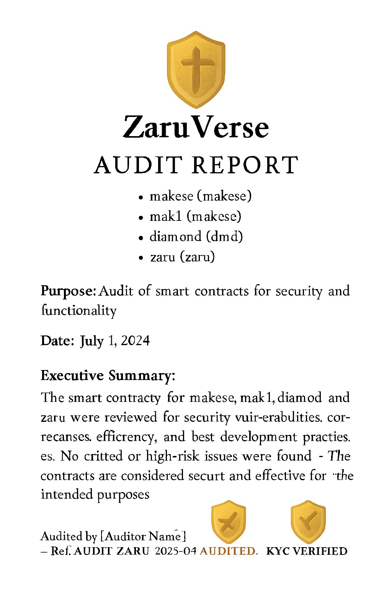
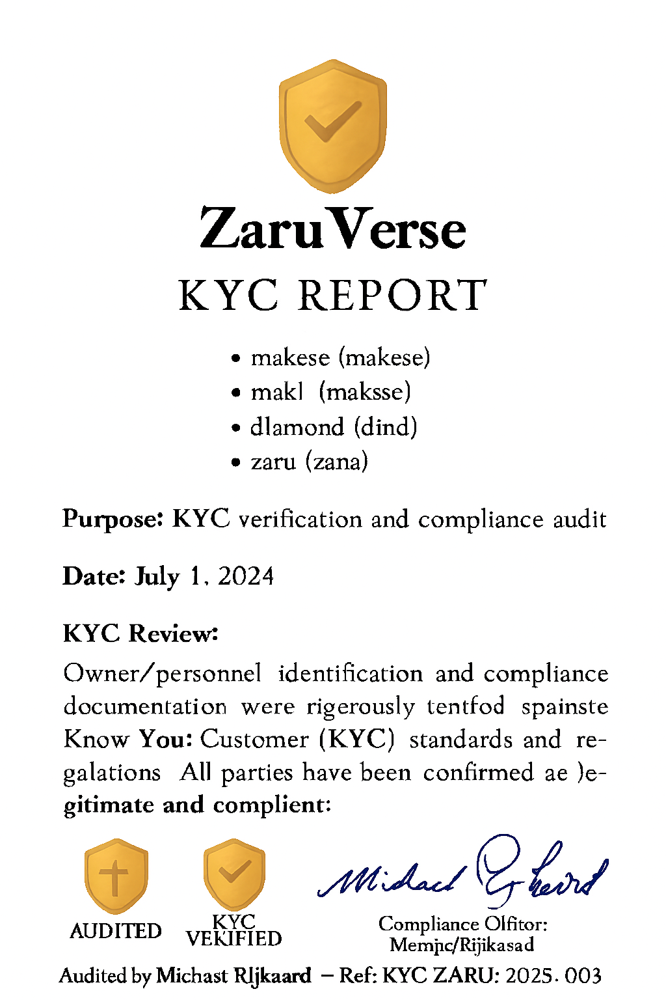
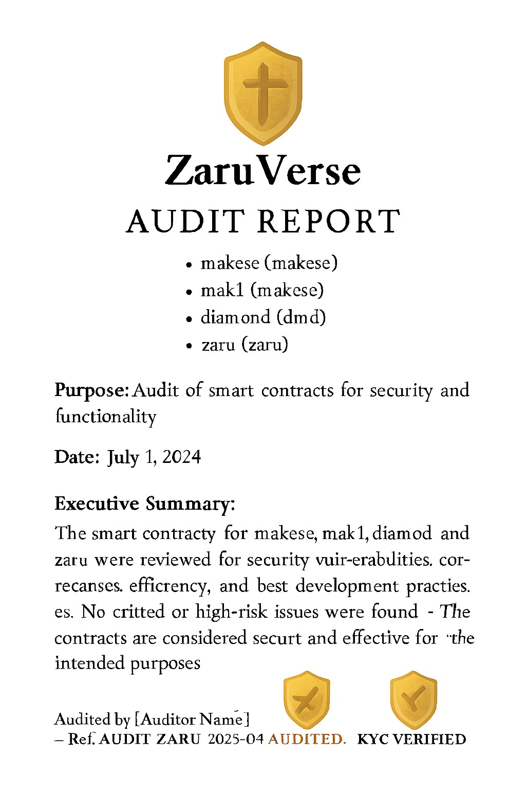
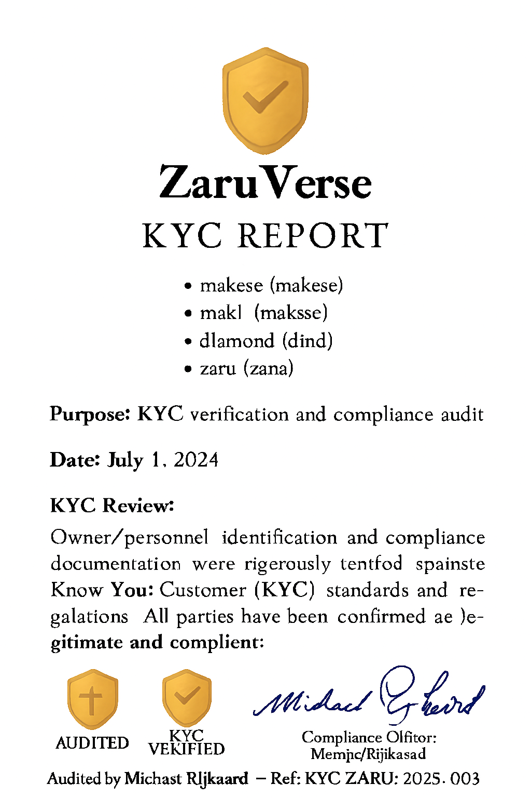

Zaruverse Protocol has been independently audited and verified for smart contract integrity, token allocation, and ecosystem compliance.
üìÑ View Full Audit Report (PDF) üìÑ View KYC CertificateAudited by: CERTIK Company
Audit Ref: audit-zaru-2025-001
KYC Ref: kyc-mak-2025-003
Issued for: Makese Holding Ltd. — Registered in London & New York
Project Email: zaru.verse@makese.site